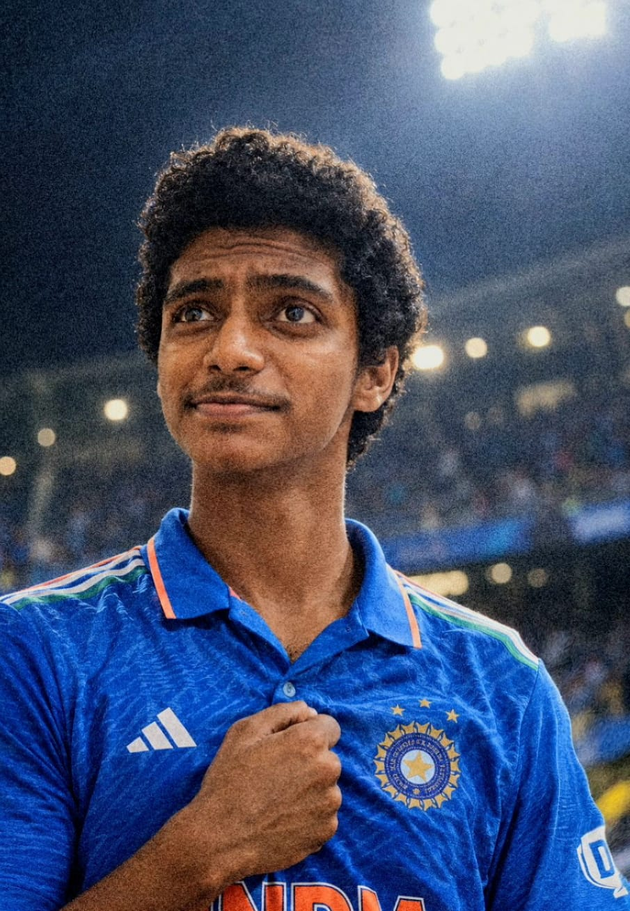
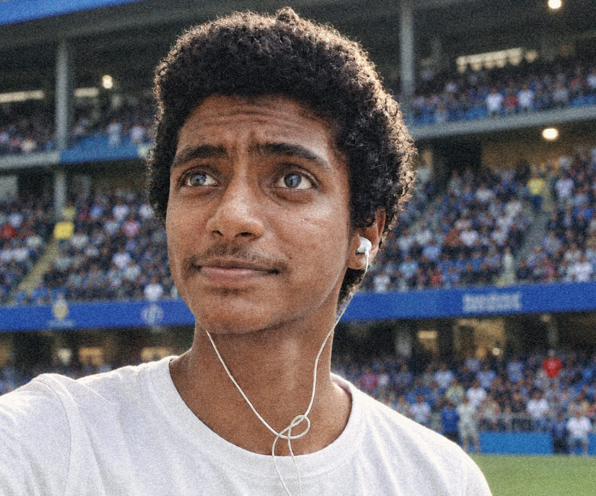
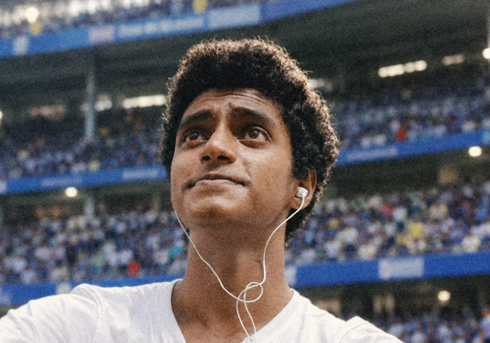

Welcome to the official website of Juan Lyju. Explore my cricket journey, performances, photographs and achievements.
EXPLORE MY JOURNEY
I am Juan Lyju, a passionate cricketer with a strong love for the game. Cricket is more than just a sport to me — it is a journey of learning, competing and improving every day.
Matches
Runs
Wickets
Batting

